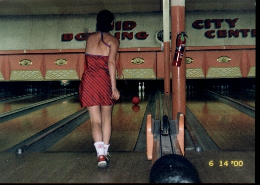

Home
Us
Pascale
Graham
Thornbush
Family & Friends
SeaMaster
Wedding
France 2001
Lockie's Art
What's New
Honeymoon
Activities
|
What did we do? Well... besides that.
Eating
New Orleans is all about the food. From old standards like the Commander's Palace to the newcomers like Emeril's, one can find a great meal on every corner.
We tried a balanced diet of old and new. We had the ubiquitous turtle soup at Commanders as well as their signature dessert, bananas foster.
(Lockie's eyes glaze over when anyone mentions Foster. It brings her to her happy place).
At Commanders we were surrounded by staff. One unfortunate waiter had the task of picking up our dropped napkins. He replaced our napkins a record of 273 times! We were also seen at Emeril's (photo at left). Unfortunately Emeril himself was not seen, he was also honeymooning with wife #2, 3? So, we have had the great food, from beignets to Gumbo, But how to create these New Orleans masterpieces of culinary perfection at home? We took a cooking class. links to all above mentioned fun stuff, just click.
Music
There's also great music to enjoy. Check out a sampling at Red Hot Jazz.

Bowling
Nothing like a cultural experience. What could be more newlywed than bowling a few sets?
On a hot day in the bayou, you've got to find a way to get out of the sun. Who ever thought that you'd try to strike out on you own honeymoon. As it turns out, it wasn't even possible. |
© TaterCo: We've got eyes for your business